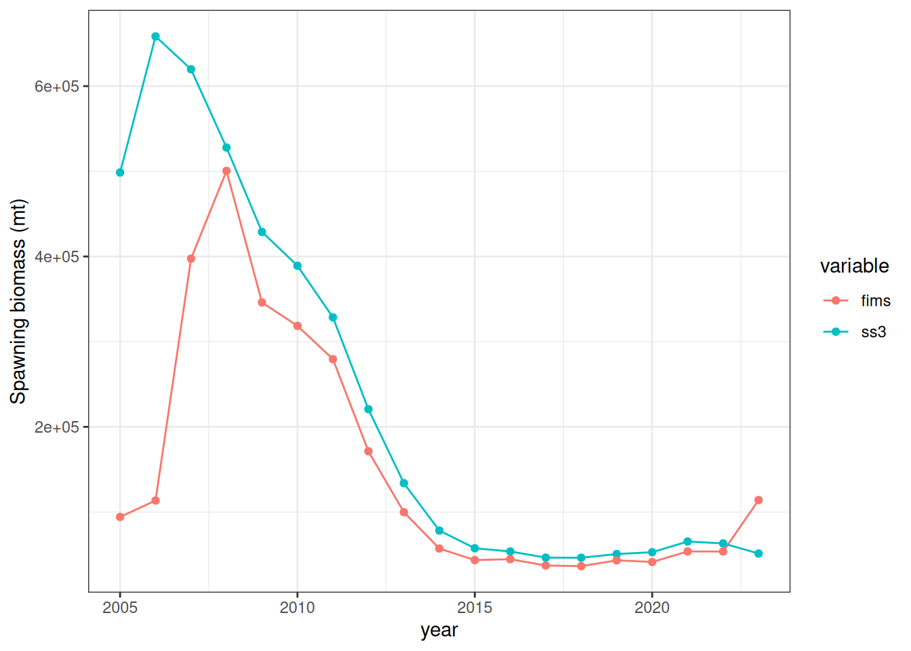
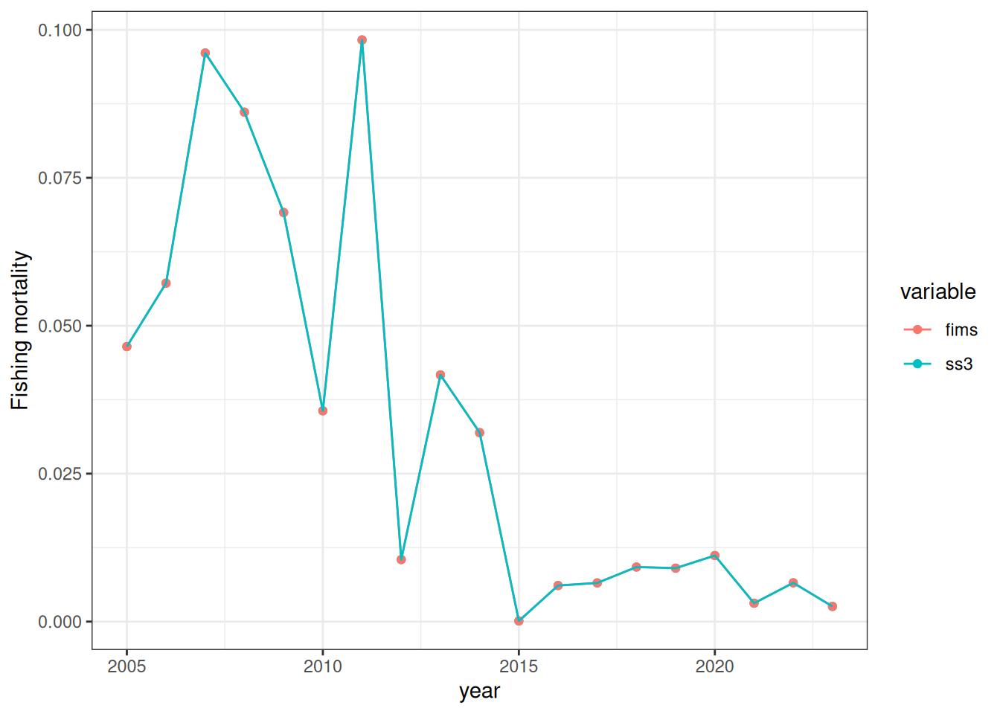
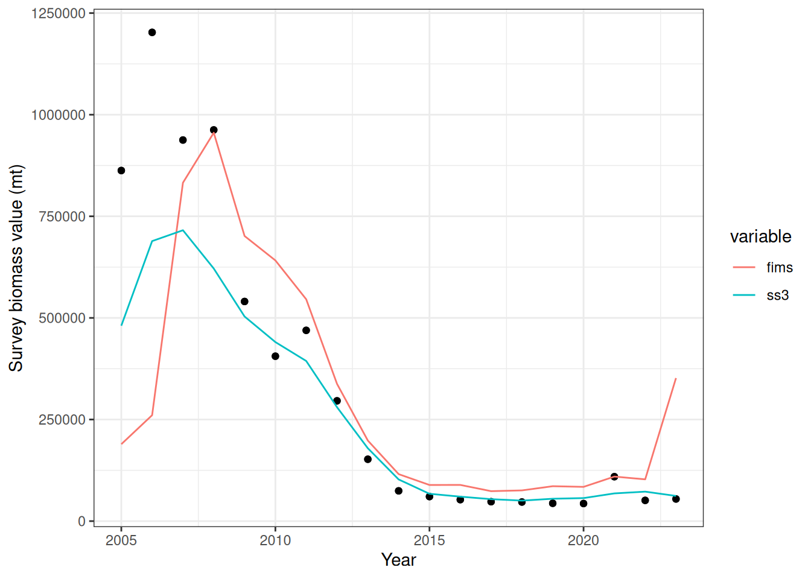
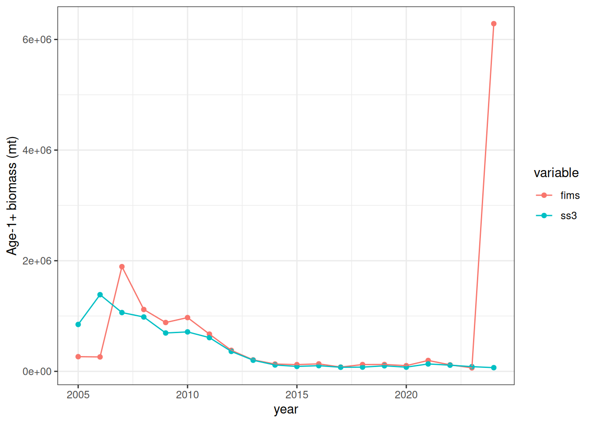
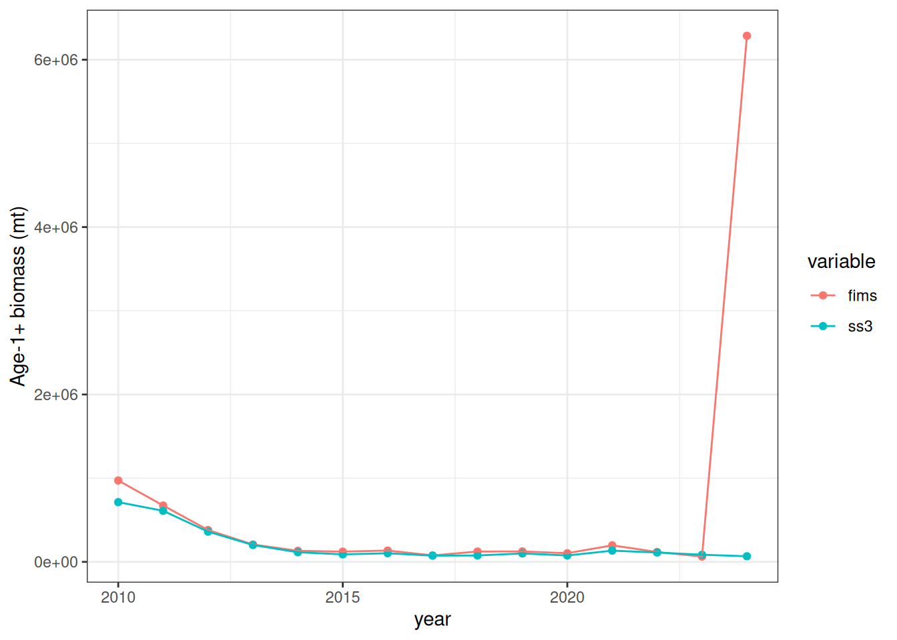
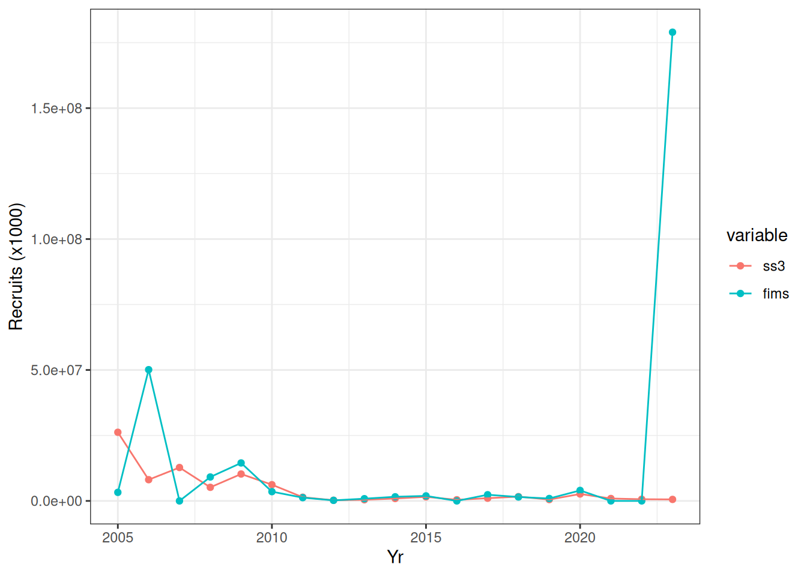
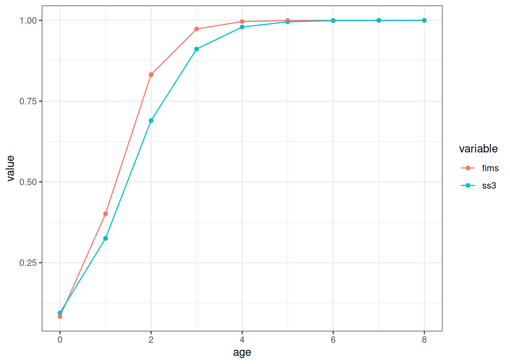

Code
common_name <- "Northern subpopulation of Pacific sardine"common_name <- "Northern subpopulation of Pacific sardine"The model presented in this case study was changed substantially from the operational version and should not be considered reflective of the Northern subpopulation of Pacific sardine stock. These results are intended to be a demonstration and nothing more.
To get the operational model to more closely match a FIMS model the following changes were made:
load(file.path(data_directory, "sardine_simplified_res.Rdata"))
FIMS::clear()
#--------------------------------------------------------
#Logistic function for later use
logistic <- function(x, slope, inflection_point){
out <- 1 / (1 + exp(-1 * slope * (x - inflection_point)))
out <- data.frame(x = x, value = out)
return(out)
}
#--------------------------------------------------------
#Manually enter data
# setwd("C://Users//peter.kuriyama//SynologyDrive/Research//noaa//FIMS")
#-----Catch
catch <- data.frame(year = 2005:2023, catch = c(29188.50, 53107.00, 69929.40,
56317.80, 33546.40, 17466.40, 39383.10, 2585.38, 5705.77, 2558.63, 7.18, 428.26,
347.11, 514.20, 619.04, 653.15, 285.89, 508.02, 152.31))
# ggplot(catch, aes(x = year, y = catch)) + geom_point() +
# geom_line() + scale_y_continuous(label = comma)
fimscatch <- tibble::tibble(type = "catch", fleet = "fleet1",
age = NA, timing = catch$year, observed = catch$catch,
unit = "mt",
uncertainty = paste0(
"~dlnorm(meanlog = log_catch_expected, sdlog = 0.00001",
# sqrt(log(0.01^2 + 1)), # Input was 0.05 but log(sqrt(log(0.01^2 + 1)))
# was used in parameter tibble
")"
))
#-----CPUE
cpue <- data.frame(year = 2005:2023, obs = c(649619.0, 899635.0, 956354.0, 863281.0, 652029.0,
504970.0, 395783.0, 293980.0, 182417.0, 89260.1,
46403.0, 40704.0, 44592.1, 48789.1, 53551.8,
59765.8, 68451.7, 71612.5, 68957.9))
# ggplot(cpue, aes(x = year, y = obs)) + geom_point() + geom_line() +
# scale_y_continuous(label = comma)
fimsindex <- tibble::tibble(type = "index", fleet = "survey1",
age = NA, timing = cpue$year,
observed = cpue$obs, unit = "mt",
uncertainty = paste0(
"~dlnorm(meanlog = log_catch_expected, sdlog = ",
sqrt(log(0.01^2 + 1)), # Input was 0.3 but log(sqrt(log(0.01^2 + 1)))
# was used in parameter tibble
")"
)
)
fimsindex$unit <- ""
#-----Age compositions
acomps <- utils::read.csv(file.path(data_directory, "sardine_acomps.csv")) |>
dplyr::group_by(name, Yr) |>
# convert value column to proportions, to match fims-demo.Rmd
dplyr::mutate(value_prop = value / sum(value)) |>
dplyr::ungroup()
fimsage <- tibble::tibble(type = "age_comp", fleet = acomps$name,
age = acomps$age, timing = acomps$Yr,
observed = acomps$value_prop, unit = "proportion",
uncertainty = paste0("~dmultinom(prob = agecomp_proportion, size = ", acomps$Nsamp, ")"))
#fimsage$uncertainty <- 50 Leave as empirical values
#-----Weight-at-age
# Q: What are the differences in how SS3 and FIMS process wtatage inputs/units?
# A: SS3 assumes WAA is expressed in kg, and then converts to mt for biomass calculations
# SS3 also expresses natage in terms of 1000s/fish
# FIMS assumes WAA is expressed in mt, but expresses natage in fish
# WAA input values are supplied to SS3 in kg and FIMS in mt
# Model now correctly processes inputs and provides comparable NAA, WAA, and biomass outputs to SS3
wtatage <- r4ss::SS_readwtatage(file.path(data_directory, "sardine_wtatage.ss_new")) |>
dplyr::filter(fleet %in% c(1)) |>
dplyr::mutate(fleet = ifelse(fleet == 1, "fleet1", "survey1")) |>
tidyr::pivot_longer(cols = `0`:`10`, names_to = "age", values_to = "value") |>
dplyr::filter(!(age %in% c("9", "10"))) |> # Trim ages 9 and 10 to match age-comps
dplyr::mutate(value = value / 1000) # WAA converted from kg to mt
fimswaa <- tibble::tibble(
type = "weight_at_age",
fleet = wtatage$fleet,
age = wtatage$age,
timing = wtatage$year,
observed = wtatage$value,
unit = "mt",
uncertainty = NA_character_
)
#Combine everything, format
data_4_model <- rbind(fimscatch, fimsindex, fimsage, fimswaa)
data_4_model$age <- as.integer(data_4_model$age)
data_4_model$observed <- as.numeric(data_4_model$observed)
# Convert to FIMSFrame
data_4_model <- FIMS::FIMSFrame(data_4_model)
n_years <- FIMS::get_n_years(data_4_model)
years <- FIMS::get_start_year(data_4_model):FIMS::get_end_year(data_4_model)
n_ages <- FIMS::get_n_ages(data_4_model)
ages <- FIMS::get_ages(data_4_model)
rzero <- 14.2 + log(1000) #14.2 is log(R0) in sardine simplified model
M_value <- 0.8 #.8 worked pretty well
init_naa <- exp(rzero) * exp(-(ages - 1) * M_value)
init_naa[n_ages] <- init_naa[n_ages] / M_value # sum of infinite series
# Create default recruitment, growth, and maturity parameters
parameters <- FIMS::setup_default_parameters(data = data_4_model) |>
dplyr::rows_update(
tibble::tibble(
module_name = "Selectivity",
label = rep(c("inflection_point", "slope"), 2),
value = c(1, 5, 1.2, 2),
estimation_type = "constant",
fleet = rep(c("fleet1", "survey1"), each = 2)
),
by = c("module_name", "label", "fleet")
) |>
dplyr::rows_update(
tibble::tibble(
module_name = "Recruitment",
label = "logit_steep",
value = FIMS::logit(0.2, 1.0, 0.6),
estimation_type = "constant"
),
by = c("module_name", "label")
) |>
dplyr::rows_update(
tibble::tibble(
module_name = "Recruitment",
label = c("log_rzero", "log_sd"),
value = c(rzero, log(1.2)),
estimation_type = "constant"
),
by = c("module_name", "label")
) |>
dplyr::rows_update(
tibble::tibble(
module_name = "Maturity",
label = c("inflection_point", "slope"),
value = c(1.2, 2.5) # 1.5 is arbitrary guess
),
by = c("module_name", "label")
) |>
dplyr::rows_update(
tibble::tibble(
module_name = "Fleet",
fleet = "survey1",
label = "log_q",
value = 0,
estimation_type = "fixed_effects"
),
by = c("module_name", "fleet", "label")
) |>
dplyr::rows_update(
ssres[["timeseries"]] |>
dplyr::select(timing = Yr, value = "F:_1") |>
dplyr::filter(
timing >= get_start_year(data_4_model),
timing <= get_end_year(data_4_model)
) |>
dplyr::mutate(
module_name = "Fleet",
fleet = "fleet1",
label = "log_Fmort",
estimation_type = "constant",
value = log(value)
),
by = c("module_name", "fleet", "label", "timing")
) |>
dplyr::rows_update(
tibble::tibble(
module_name = "Population",
label = c("log_M"),
value = log(M_value)
),
by = c("module_name", "label")
) |>
dplyr::rows_update(
tibble::tibble(
module_name = "Population",
label = c("log_init_naa"),
age = ages,
value = log(init_naa),
estimation_type = "constant"
),
by = c("module_name", "age", "label")
)# Fit the model
fit <- parameters |>
FIMS::initialize_fims(data = data_4_model) |>
FIMS::fit_fims(optimize = TRUE)✔ Starting optimization ...
ℹ Restarting optimizer 3 times to improve gradient.
ℹ Maximum gradient went from 0 to 0 after 3 steps.
✔ Finished optimization
✔ Finished sdreport
ℹ FIMS model version: 0.11.0.9000
ℹ Total run time was 1.48395 seconds
ℹ Number of parameters: fixed_effects=1, random_effects=18, and total=19
ℹ Maximum gradient= 0
ℹ Negative log likelihood (NLL):
• Marginal NLL= 32796661437.3464
• Total NLL= 32796661305.4976
ℹ Terminal SB= 1197366.29186output <- FIMS::get_estimates(fit) |>
dplyr::mutate(
uncertainty_label = "se",
year = year_i + get_start_year(data_4_model) - 1,
estimate = estimated
)
dplyr::filter(output, label == "log_q") |> as.data.frame() module_name module_id module_type label type type_id parameter_id fleet
1 Fleet 1 <NA> log_q vector 3 3 fleet1
2 Fleet 2 <NA> log_q vector 31 67 survey1
year_i age_i length_i input estimated expected observed estimation_type
1 NA NA NA 0 0 NA NA constant
2 NA NA NA 0 0 NA NA fixed_effects
uncertainty distribution input_type lpdf likelihood log_sd log_like_cv
1 NA <NA> <NA> NA NA NA NA
2 391292.5 <NA> <NA> NA NA NA NA
gradient uncertainty_label year estimate
1 NA se NA 0
2 6.310586e-15 se NA 0dplyr::filter(output, label == "spawning_biomass") |> as.data.frame() module_name module_id module_type label type type_id parameter_id
1 Population NA <NA> spawning_biomass <NA> NA NA
2 Population NA <NA> spawning_biomass <NA> NA NA
3 Population NA <NA> spawning_biomass <NA> NA NA
4 Population NA <NA> spawning_biomass <NA> NA NA
5 Population NA <NA> spawning_biomass <NA> NA NA
6 Population NA <NA> spawning_biomass <NA> NA NA
7 Population NA <NA> spawning_biomass <NA> NA NA
8 Population NA <NA> spawning_biomass <NA> NA NA
9 Population NA <NA> spawning_biomass <NA> NA NA
10 Population NA <NA> spawning_biomass <NA> NA NA
11 Population NA <NA> spawning_biomass <NA> NA NA
12 Population NA <NA> spawning_biomass <NA> NA NA
13 Population NA <NA> spawning_biomass <NA> NA NA
14 Population NA <NA> spawning_biomass <NA> NA NA
15 Population NA <NA> spawning_biomass <NA> NA NA
16 Population NA <NA> spawning_biomass <NA> NA NA
17 Population NA <NA> spawning_biomass <NA> NA NA
18 Population NA <NA> spawning_biomass <NA> NA NA
19 Population NA <NA> spawning_biomass <NA> NA NA
20 Population NA <NA> spawning_biomass <NA> NA NA
fleet year_i age_i length_i input estimated expected observed
1 <NA> 1 NA NA NA 94248.02 NA NA
2 <NA> 2 NA NA NA 113551.40 NA NA
3 <NA> 3 NA NA NA 397493.41 NA NA
4 <NA> 4 NA NA NA 500525.17 NA NA
5 <NA> 5 NA NA NA 346074.40 NA NA
6 <NA> 6 NA NA NA 318535.33 NA NA
7 <NA> 7 NA NA NA 279482.58 NA NA
8 <NA> 8 NA NA NA 171350.01 NA NA
9 <NA> 9 NA NA NA 99820.89 NA NA
10 <NA> 10 NA NA NA 57155.12 NA NA
11 <NA> 11 NA NA NA 43614.70 NA NA
12 <NA> 12 NA NA NA 44670.92 NA NA
13 <NA> 13 NA NA NA 37211.66 NA NA
14 <NA> 14 NA NA NA 36483.44 NA NA
15 <NA> 15 NA NA NA 43285.37 NA NA
16 <NA> 16 NA NA NA 41383.21 NA NA
17 <NA> 17 NA NA NA 53768.07 NA NA
18 <NA> 18 NA NA NA 53646.53 NA NA
19 <NA> 19 NA NA NA 114048.28 NA NA
20 <NA> 20 NA NA NA 1197366.29 NA NA
estimation_type uncertainty distribution input_type lpdf likelihood log_sd
1 derived_quantity 0.0000000 <NA> <NA> NA NA NA
2 derived_quantity 0.1851328 <NA> <NA> NA NA NA
3 derived_quantity 2.6410355 <NA> <NA> NA NA NA
4 derived_quantity 3.5890660 <NA> <NA> NA NA NA
5 derived_quantity 2.5519869 <NA> <NA> NA NA NA
6 derived_quantity 2.5484885 <NA> <NA> NA NA NA
7 derived_quantity 2.2104883 <NA> <NA> NA NA NA
8 derived_quantity 1.4074509 <NA> <NA> NA NA NA
9 derived_quantity 0.8528555 <NA> <NA> NA NA NA
10 derived_quantity 0.5039215 <NA> <NA> NA NA NA
11 derived_quantity 0.3835467 <NA> <NA> NA NA NA
12 derived_quantity 0.3777963 <NA> <NA> NA NA NA
13 derived_quantity 0.2982199 <NA> <NA> NA NA NA
14 derived_quantity 0.2912226 <NA> <NA> NA NA NA
15 derived_quantity 0.3423816 <NA> <NA> NA NA NA
16 derived_quantity 0.3216318 <NA> <NA> NA NA NA
17 derived_quantity 0.3698868 <NA> <NA> NA NA NA
18 derived_quantity 0.4344616 <NA> <NA> NA NA NA
19 derived_quantity 3.5136432 <NA> <NA> NA NA NA
20 derived_quantity 52.1356627 <NA> <NA> NA NA NA
log_like_cv gradient uncertainty_label year estimate
1 NA NA se 2005 94248.02
2 NA NA se 2006 113551.40
3 NA NA se 2007 397493.41
4 NA NA se 2008 500525.17
5 NA NA se 2009 346074.40
6 NA NA se 2010 318535.33
7 NA NA se 2011 279482.58
8 NA NA se 2012 171350.01
9 NA NA se 2013 99820.89
10 NA NA se 2014 57155.12
11 NA NA se 2015 43614.70
12 NA NA se 2016 44670.92
13 NA NA se 2017 37211.66
14 NA NA se 2018 36483.44
15 NA NA se 2019 43285.37
16 NA NA se 2020 41383.21
17 NA NA se 2021 53768.07
18 NA NA se 2022 53646.53
19 NA NA se 2023 114048.28
20 NA NA se 2024 1197366.29dplyr::filter(output, label == "index_expected") |> as.data.frame() module_name module_id module_type label type type_id parameter_id
1 Fleet 1 <NA> index_expected <NA> NA NA
2 Fleet 1 <NA> index_expected <NA> NA NA
3 Fleet 1 <NA> index_expected <NA> NA NA
4 Fleet 1 <NA> index_expected <NA> NA NA
5 Fleet 1 <NA> index_expected <NA> NA NA
6 Fleet 1 <NA> index_expected <NA> NA NA
7 Fleet 1 <NA> index_expected <NA> NA NA
8 Fleet 1 <NA> index_expected <NA> NA NA
9 Fleet 1 <NA> index_expected <NA> NA NA
10 Fleet 1 <NA> index_expected <NA> NA NA
11 Fleet 1 <NA> index_expected <NA> NA NA
12 Fleet 1 <NA> index_expected <NA> NA NA
13 Fleet 1 <NA> index_expected <NA> NA NA
14 Fleet 1 <NA> index_expected <NA> NA NA
15 Fleet 1 <NA> index_expected <NA> NA NA
16 Fleet 1 <NA> index_expected <NA> NA NA
17 Fleet 1 <NA> index_expected <NA> NA NA
18 Fleet 1 <NA> index_expected <NA> NA NA
19 Fleet 1 <NA> index_expected <NA> NA NA
20 Fleet 2 <NA> index_expected <NA> NA NA
21 Fleet 2 <NA> index_expected <NA> NA NA
22 Fleet 2 <NA> index_expected <NA> NA NA
23 Fleet 2 <NA> index_expected <NA> NA NA
24 Fleet 2 <NA> index_expected <NA> NA NA
25 Fleet 2 <NA> index_expected <NA> NA NA
26 Fleet 2 <NA> index_expected <NA> NA NA
27 Fleet 2 <NA> index_expected <NA> NA NA
28 Fleet 2 <NA> index_expected <NA> NA NA
29 Fleet 2 <NA> index_expected <NA> NA NA
30 Fleet 2 <NA> index_expected <NA> NA NA
31 Fleet 2 <NA> index_expected <NA> NA NA
32 Fleet 2 <NA> index_expected <NA> NA NA
33 Fleet 2 <NA> index_expected <NA> NA NA
34 Fleet 2 <NA> index_expected <NA> NA NA
35 Fleet 2 <NA> index_expected <NA> NA NA
36 Fleet 2 <NA> index_expected <NA> NA NA
37 Fleet 2 <NA> index_expected <NA> NA NA
38 Fleet 2 <NA> index_expected <NA> NA NA
fleet year_i age_i length_i input estimated expected observed
1 fleet1 1 NA NA NA 208425.85 NA NA
2 fleet1 2 NA NA NA 209627.22 NA NA
3 fleet1 3 NA NA NA 1017628.50 NA NA
4 fleet1 4 NA NA NA 1112279.66 NA NA
5 fleet1 5 NA NA NA 725558.74 NA NA
6 fleet1 6 NA NA NA 718326.53 NA NA
7 fleet1 7 NA NA NA 609486.78 NA NA
8 fleet1 8 NA NA NA 357965.94 NA NA
9 fleet1 9 NA NA NA 203481.16 NA NA
10 fleet1 10 NA NA NA 117414.13 NA NA
11 fleet1 11 NA NA NA 94585.16 NA NA
12 fleet1 12 NA NA NA 101578.42 NA NA
13 fleet1 13 NA NA NA 77493.01 NA NA
14 fleet1 14 NA NA NA 82147.12 NA NA
15 fleet1 15 NA NA NA 98095.77 NA NA
16 fleet1 16 NA NA NA 87542.32 NA NA
17 fleet1 17 NA NA NA 127162.37 NA NA
18 fleet1 18 NA NA NA 117318.59 NA NA
19 fleet1 19 NA NA NA 86532.80 NA NA
20 survey1 1 NA NA NA 189302.47 -188.2394 649619.0
21 survey1 2 NA NA NA 260661.44 -187.9173 899635.0
22 survey1 3 NA NA NA 832567.32 -186.7651 956354.0
23 survey1 4 NA NA NA 955623.10 -186.6396 863281.0
24 survey1 5 NA NA NA 701478.35 -186.9386 652029.0
25 survey1 6 NA NA NA 641400.88 -187.0149 504970.0
26 survey1 7 NA NA NA 545844.43 -187.2034 395783.0
27 survey1 8 NA NA NA 337684.56 -187.6480 293980.0
28 survey1 9 NA NA NA 198221.08 -188.1941 182417.0
29 survey1 10 NA NA NA 115594.09 -188.7284 89260.1
30 survey1 11 NA NA NA 88914.72 -188.9781 46403.0
31 survey1 12 NA NA NA 89075.82 -188.9785 40704.0
32 survey1 13 NA NA NA 73705.28 -189.1683 44592.1
33 survey1 14 NA NA NA 75587.88 -189.1434 48789.1
34 survey1 15 NA NA NA 85904.67 -189.0158 53551.8
35 survey1 16 NA NA NA 84276.78 -189.0357 59765.8
36 survey1 17 NA NA NA 109560.06 -188.7702 68451.7
37 survey1 18 NA NA NA 102800.82 -188.8358 71612.5
38 survey1 19 NA NA NA 352028.10 -187.6022 68957.9
estimation_type uncertainty distribution input_type lpdf likelihood
1 derived_quantity 0.000000e+00 <NA> <NA> NA NA
2 derived_quantity 5.225274e-02 <NA> <NA> NA NA
3 derived_quantity 6.995367e+00 <NA> <NA> NA NA
4 derived_quantity 8.301228e+00 <NA> <NA> NA NA
5 derived_quantity 7.064794e+00 <NA> <NA> NA NA
6 derived_quantity 6.848060e+00 <NA> <NA> NA NA
7 derived_quantity 5.611579e+00 <NA> <NA> NA NA
8 derived_quantity 3.337074e+00 <NA> <NA> NA NA
9 derived_quantity 1.939993e+00 <NA> <NA> NA NA
10 derived_quantity 1.130203e+00 <NA> <NA> NA NA
11 derived_quantity 8.950123e-01 <NA> <NA> NA NA
12 derived_quantity 8.752183e-01 <NA> <NA> NA NA
13 derived_quantity 7.367111e-01 <NA> <NA> NA NA
14 derived_quantity 8.162609e-01 <NA> <NA> NA NA
15 derived_quantity 9.383388e-01 <NA> <NA> NA NA
16 derived_quantity 8.293039e-01 <NA> <NA> NA NA
17 derived_quantity 8.804983e-01 <NA> <NA> NA NA
18 derived_quantity 1.005079e+00 <NA> <NA> NA NA
19 derived_quantity 8.640905e-01 <NA> <NA> NA NA
20 derived_quantity 7.407263e+10 log_normal data -3806360000 -203270467
21 derived_quantity 1.019949e+11 log_normal data -3806360000 -203277466
22 derived_quantity 3.257773e+11 log_normal data -3806360000 -201083529
23 derived_quantity 3.739281e+11 log_normal data -3806360000 -200626739
24 derived_quantity 2.744832e+11 log_normal data -3806360000 -200663483
25 derived_quantity 2.509753e+11 log_normal data -3806360000 -200304375
26 derived_quantity 2.135848e+11 log_normal data -3806360000 -200194172
27 derived_quantity 1.321334e+11 log_normal data -3806360000 -200488899
28 derived_quantity 7.756241e+10 log_normal data -3806360000 -200626773
29 derived_quantity 4.523109e+10 log_normal data -3806360000 -200265579
30 derived_quantity 3.479166e+10 log_normal data -3806360000 -199456764
31 derived_quantity 3.485470e+10 log_normal data -3806360000 -199195897
32 derived_quantity 2.884032e+10 log_normal data -3806360000 -199757347
33 derived_quantity 2.957697e+10 log_normal data -3806360000 -199887376
34 derived_quantity 3.361385e+10 log_normal data -3806360000 -199818524
35 derived_quantity 3.297687e+10 log_normal data -3806360000 -200077792
36 derived_quantity 4.287002e+10 log_normal data -3806360000 -199818303
37 derived_quantity 4.022519e+10 log_normal data -3806360000 -200039570
38 derived_quantity 1.377459e+11 log_normal data -3806360000 -197504698
log_sd log_like_cv gradient uncertainty_label year estimate
1 NA NA NA se 2005 208425.85
2 NA NA NA se 2006 209627.22
3 NA NA NA se 2007 1017628.50
4 NA NA NA se 2008 1112279.66
5 NA NA NA se 2009 725558.74
6 NA NA NA se 2010 718326.53
7 NA NA NA se 2011 609486.78
8 NA NA NA se 2012 357965.94
9 NA NA NA se 2013 203481.16
10 NA NA NA se 2014 117414.13
11 NA NA NA se 2015 94585.16
12 NA NA NA se 2016 101578.42
13 NA NA NA se 2017 77493.01
14 NA NA NA se 2018 82147.12
15 NA NA NA se 2019 98095.77
16 NA NA NA se 2020 87542.32
17 NA NA NA se 2021 127162.37
18 NA NA NA se 2022 117318.59
19 NA NA NA se 2023 86532.80
20 -4.605195 NA NA se 2005 189302.47
21 -4.605195 NA NA se 2006 260661.44
22 -4.605195 NA NA se 2007 832567.32
23 -4.605195 NA NA se 2008 955623.10
24 -4.605195 NA NA se 2009 701478.35
25 -4.605195 NA NA se 2010 641400.88
26 -4.605195 NA NA se 2011 545844.43
27 -4.605195 NA NA se 2012 337684.56
28 -4.605195 NA NA se 2013 198221.08
29 -4.605195 NA NA se 2014 115594.09
30 -4.605195 NA NA se 2015 88914.72
31 -4.605195 NA NA se 2016 89075.82
32 -4.605195 NA NA se 2017 73705.28
33 -4.605195 NA NA se 2018 75587.88
34 -4.605195 NA NA se 2019 85904.67
35 -4.605195 NA NA se 2020 84276.78
36 -4.605195 NA NA se 2021 109560.06
37 -4.605195 NA NA se 2022 102800.82
38 -4.605195 NA NA se 2023 352028.10get_data(data_4_model)|>dplyr::filter(type == "catch")# A tibble: 19 × 7
type fleet age timing observed unit uncertainty
<chr> <chr> <int> <int> <dbl> <chr> <chr>
1 catch fleet1 NA 2005 29188. mt ~dlnorm(meanlog = log_catch_expecte…
2 catch fleet1 NA 2006 53107 mt ~dlnorm(meanlog = log_catch_expecte…
3 catch fleet1 NA 2007 69929. mt ~dlnorm(meanlog = log_catch_expecte…
4 catch fleet1 NA 2008 56318. mt ~dlnorm(meanlog = log_catch_expecte…
5 catch fleet1 NA 2009 33546. mt ~dlnorm(meanlog = log_catch_expecte…
6 catch fleet1 NA 2010 17466. mt ~dlnorm(meanlog = log_catch_expecte…
7 catch fleet1 NA 2011 39383. mt ~dlnorm(meanlog = log_catch_expecte…
8 catch fleet1 NA 2012 2585. mt ~dlnorm(meanlog = log_catch_expecte…
9 catch fleet1 NA 2013 5706. mt ~dlnorm(meanlog = log_catch_expecte…
10 catch fleet1 NA 2014 2559. mt ~dlnorm(meanlog = log_catch_expecte…
11 catch fleet1 NA 2015 7.18 mt ~dlnorm(meanlog = log_catch_expecte…
12 catch fleet1 NA 2016 428. mt ~dlnorm(meanlog = log_catch_expecte…
13 catch fleet1 NA 2017 347. mt ~dlnorm(meanlog = log_catch_expecte…
14 catch fleet1 NA 2018 514. mt ~dlnorm(meanlog = log_catch_expecte…
15 catch fleet1 NA 2019 619. mt ~dlnorm(meanlog = log_catch_expecte…
16 catch fleet1 NA 2020 653. mt ~dlnorm(meanlog = log_catch_expecte…
17 catch fleet1 NA 2021 286. mt ~dlnorm(meanlog = log_catch_expecte…
18 catch fleet1 NA 2022 508. mt ~dlnorm(meanlog = log_catch_expecte…
19 catch fleet1 NA 2023 152. mt ~dlnorm(meanlog = log_catch_expecte…# Get information about the model and print a few characters to the screen
# log <- FIMS::get_log_module("information")#------------------------------------------------------------------------
#------SSB
# Q: Is 'ssb' from get_report(fit) calculated assuming 2 genders and a 50:50 ratio?
# If so, it might explain the discrepancy between ss3 (1 gender model) and fims (2 genders)
ssbs <- ssres$timeseries |>
dplyr::select(Yr, ss3 = SpawnBio) |>
dplyr::full_join(
dplyr::filter(output, label == "spawning_biomass") |>
dplyr::select(year, fims = estimate),
by = c("Yr" = "year")
)
ssbs |>
dplyr::filter(Yr >= 2005, Yr < 2024) |>
tidyr::pivot_longer(names_to = "variable", cols = dplyr::matches("ss3|fims")) |>
ggplot2::ggplot(ggplot2::aes(x = Yr, y = value, group = variable, color = variable)) +
ggplot2::geom_point() +
ggplot2::geom_line() +
ggplot2::ylab("Spawning biomass (mt)") +
ggplot2::theme_bw() +
ggplot2::xlab("year") +
ggplot2::theme(legend.position.inside = c(.9, .9))
ggplot2::ggsave(
"figures/SWFSC-sardine-sb.png",
width = 7.35,
height = 4.8
)
# Fishing mortality
ssres$timeseries |>
dplyr::select(Yr, ss3 = "F:_1") |>
dplyr::full_join(
dplyr::filter(output, label == "log_Fmort", module_id == 1) |>
dplyr::mutate(estimate = exp(estimate)) |>
dplyr::select(year, fims = estimate),
by = c("Yr" = "year")
) |>
dplyr::filter(Yr >= 2005, Yr < 2024) |>
tidyr::pivot_longer(names_to = "variable", cols = dplyr::matches("ss3|fims")) |>
ggplot2::ggplot(ggplot2::aes(x = Yr, y = value, group = variable, color = variable)) +
ggplot2::geom_point() +
ggplot2::geom_line() +
ggplot2::ylab("Fishing mortality") +
ggplot2::theme_bw() +
ggplot2::xlab("year") +
ggplot2::theme(legend.position.inside = c(.9, .9))
#------------------------------------------------------------------------
#------Index fits
index <- ssres$cpue |>
dplyr::select(year = Yr, obs = Obs, ss3 = Exp)
index$fims <- FIMS::get_report(fit)[["index_expected"]][[2]]
index |>
tidyr::pivot_longer(names_to = "variable", cols = dplyr::matches("ss3|fims")) |>
ggplot2::ggplot(ggplot2::aes(x = year)) +
ggplot2::geom_point(ggplot2::aes(y = obs)) +
ggplot2::geom_line(ggplot2::aes(y = value, color = variable, group = variable)) +
ggplot2::theme_bw() +
ggplot2::theme(legend.position.inside = c(.9, .9)) +
ggplot2::xlab("Year") +
ggplot2::ylab("Survey biomass value (mt)")
ggplot2::ggsave("figures/SWFSC-sardine-surveyfit.png", width = 6.8, height = 5.25)
#------------------------------------------------------------------------
#-----Calculate age-1+ biomass
#Multiply numbers at age by weight at age and sum
naa <- get_report(fit)[["numbers_at_age"]][[1]]
naa1 <- tidyr::crossing(c(years, 2024), ages) |>
dplyr::mutate(naa = naa) |>
as.data.frame()
names(naa1) <- c("year", "age", "value")
naa1$cohort <- naa1$year - naa1$age
#Format Weight at age (identical WAA for each year and fleet)
waa <- data.frame(
age = wtatage$age[(wtatage$year == 2005 & wtatage$fleet == "fleet1")],
waa = wtatage$value[(wtatage$year == 2005 & wtatage$fleet == "fleet1")]
) |>
dplyr::mutate(age = as.integer(age))
naa1 <- naa1 |>
dplyr::left_join(waa, by = "age")
naa1 <- naa1 |>
dplyr::mutate(weight = value * waa)
age1plus <- naa1 |>
dplyr::filter(age != 0) |>
dplyr::group_by(year) |>
dplyr::summarize(summbio = sum(weight))
bio1 <- ssres$timeseries |>
dplyr::filter(Seas == 1) |>
dplyr::select(Yr, Bio_smry) |>
dplyr::mutate(year = Yr, ss3bio = Bio_smry) |>
dplyr::select(-Yr, -Bio_smry)
age1plus <- age1plus |>
dplyr::left_join(bio1, by = "year")
names(age1plus) <- c("year", "fims", "ss3")
#Full time series of age-1+ biomass
age1plus |>
reshape2::melt(id.var = "year") |>
ggplot2::ggplot(ggplot2::aes(x = year, y = value, group = variable, color = variable)) +
ggplot2::geom_point() +
ggplot2::geom_line() +
ggplot2::ylab("Age-1+ biomass (mt)") +
ggplot2::theme_bw() +
ggplot2::theme(legend.position.inside = c(.9, .9))
ggplot2::ggsave("figures/SWFSC-sardine-age1plusbio.png", width = 6.8, height = 5.25)
#Zoomed in time series of age-1+
age1plus |>
reshape2::melt(id.var = "year") |>
dplyr::filter(year >= 2010) |>
ggplot2::ggplot(ggplot2::aes(x = year, y = value, group = variable, color = variable)) +
ggplot2::geom_point() +
ggplot2::geom_line() +
ggplot2::theme_bw() +
ggplot2::ylab("Age-1+ biomass (mt)") +
ggplot2::theme(legend.position.inside = c(.9, .9))
ggplot2::ggsave(
"figures/SWFSC-sardine-age1plusbio_zoomedin.png",
width = 6.8,
height = 5.25
)
#------------------------------------------------------------------------
#------Recruitment
# Divide FIMS recruits by 1000 to match reporting in SS3
recs <- ssres$timeseries |>
dplyr::select(Yr, ss3 = Recruit_0) |>
dplyr::mutate(fims = c(0, 0, get_report(fit)[["expected_recruitment"]][[1]]) / 1000)
recs |>
dplyr::filter(Yr >= 2005, Yr < 2024) |>
reshape2::melt(id.var = "Yr") |>
ggplot2::ggplot(ggplot2::aes(x = Yr, y = value, group = variable, color = variable)) +
ggplot2::theme_bw() +
ggplot2::geom_point() +
ggplot2::geom_line() +
ggplot2::theme(legend.position.inside = c(.9, .9)) +
ggplot2::ylab("Recruits (x1000)")
ggplot2::ggsave("figures/SWFSC-sardine-recruitment.png", width = 6.8, height = 5.25)
#------------------------------------------------------------------------
#------Fixed selectivities
#Are fixed but plot for comparison's sake
##Fishery
### commented out due to error "! object 'value' not found"
# sel_fishery <- logistic(ages,
# slope = dplyr::filter(FIMS::get_estimates(fit), module_name == "Selectivity", label == "slope", module_id == 1) |>
# dplyr::pull(estimated),
# inflection_point = dplyr::filter(FIMS::get_estimates(fit), module_name == "Selectivity", label == "inflection_point", module_id == 1) |>
# dplyr::pull(estimated))
# names(sel_fishery) <- c("age", "fims")
# sel_fishery$ss3 <- ssres$ageselex |>
# dplyr::filter(Yr == 2005, Factor == "Asel", Fleet == 1) |>
# dplyr::select(as.character(0:8)) |>
# t()
# sel_fishery <- sel_fishery |>
# reshape2::melt(id.var = "age")
# ggplot2::ggplot(
# sel_fishery,
# ggplot2::aes(x = age, y = value, group = variable, color = variable)
# ) +
# ggplot2::geom_point() +
# ggplot2::geom_line()
#-----------Survey
sel_survey <- logistic(ages,
slope = dplyr::filter(FIMS::get_estimates(fit), module_name == "Selectivity", label == "slope", module_id == 2) |>
dplyr::pull(estimated),
inflection_point = dplyr::filter(FIMS::get_estimates(fit), module_name == "Selectivity", label == "inflection_point", module_id == 2) |>
dplyr::pull(estimated))
names(sel_survey) <- c("age", 'fims')
sel_survey$ss3 <- ssres$ageselex |>
dplyr::filter(Yr == 2005, Factor == "Asel", Fleet == 2) |>
dplyr::select(as.character(0:8)) |>
t()
sel_survey <- sel_survey |>
reshape2::melt(id.var = "age")Warning: attributes are not identical across measure variables; they will be
droppedggplot2::ggplot(
sel_survey,
ggplot2::aes(x = age, y = value, group = variable, color = variable)
) +
ggplot2::geom_point() +
ggplot2::geom_line()
Tools to check: * data were inputted correctly (dimension checks) * starting values and settings are reasonable * I had issues installing FIMS with install_github that seemed to be related to R settings
Model: * streamline configuration of fleets and maybe make it easier to add additional fleets (perhaps clone existing ones then change specific settings) * Think about ways to modify single model settings based on say different starting values
Output: * include all parameter values and names (fixed and estimated, also show starting values) * Code to generate a default set of figures and tables for use in assessment documents/presentations
FIMS::clear()